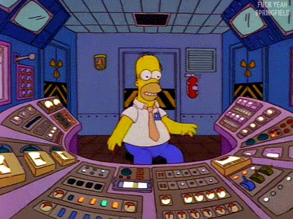

The life of the modern knowlege worker has devolved to a monotony of QWERTY keys and mouse clicks. It's time to step outside the box. It's time to shift paradigms. It's time...for buttons. That work!
Think Outside The Box
Odds are that you are probably wasting tremendous amounts of time right now pushing multiple buttons when you could be pressing only one.
Image of computer with buttons next to it.
Buttons + Bots = Awesome
With this little button lib, howdy.ai and botkit you can use your buttons to control armies of AI minions! THEY CAN DO ALL YOUR WORK FOR YOU.
For example:
Make sure people are productive
(Work Harder)
Run your daily standups
(Work Harder)
Handle emergencies
(Remain Calm)
Find out what people want for lunch...
(Video of Button and Slack)
Even let your co-workers know that you care about them... (This custom script from Howdy.ai)
(Video of "Socialize" button)
Plus, your new AI does so much work for you, don't you think he (or she) has earned their own button?
Pizza Button (Push For Pizza API?) Motivate Evacuate (with protective switch) Launch Weather Work Harder Consume Food (Triggers Bot) Joren is lateWhat will be left for you do?
Honestly, we have no idea.
Make sure you are pressing the buttons
If your AI threatens to spiral out of control, a button can help show who has the power. Your button will help you keep your AI under your thumb, instead of the other way around.
Do you have the budget?
Raspberry Pi Zero $5
Spare Buttons